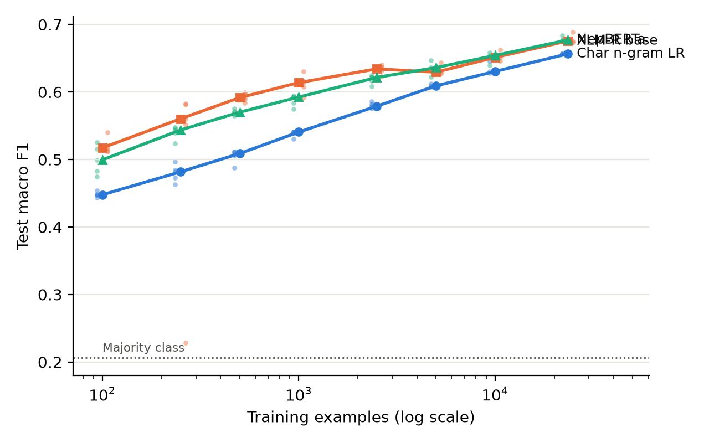
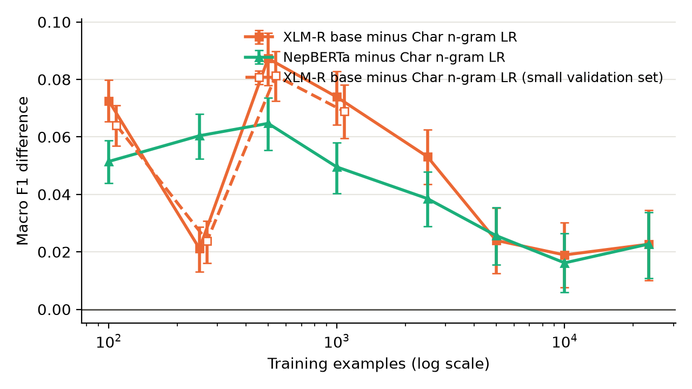

Kriti Dahal and Gaurab Khadka
Independent research project. Technical report, October 2026.
We compare a tuned character n-gram logistic regression with a fine-tuned multilingual transformer (XLM-R base) and a Nepali monolingual encoder (NepBERTa) for three-class sentiment classification of Nepali tweets. The data are the NepCOV19Tweets corpus released by Sitaula et al. (2021). Training sets range from 100 examples to the full training set of 23,385 examples, with repeated label-stratified subsampling, and all models are trained on identical subsamples. We evaluate under a split that keeps near-duplicate tweets in the same partition. XLM-R outperforms the character model at every training size tested. The mean paired macro F1 difference ranges from +0.019 to +0.087, and every 95% interval excludes zero after Holm correction. The advantage is largest at a few hundred to a few thousand examples and narrows to +0.023 at full size. The character model therefore has no small-data regime of superiority on this task, down to 100 examples. A sensitivity analysis in which model selection uses a validation set scaled to the training budget leaves the conclusion unchanged. NepBERTa also outperforms the character model at every size, but it is less sample-efficient than XLM-R between 100 and 2,500 examples, and the two are indistinguishable from 5,000 examples upward. Nepali-specific pretraining therefore does not improve data efficiency on this task. Random splitting, which places near-duplicate tweets on both sides of the evaluation, raises the character model's macro F1 from 0.657 to 0.673. We release code, split identifiers and predictions. We do not redistribute tweet text.
For low-resource languages, practitioners often have a few hundred to a few thousand labeled examples. Character n-gram linear models are cheap, robust to spelling variation, and frequently competitive in this range, so the choice between such a model and a fine-tuned pretrained transformer is not obvious. Published comparisons usually report a single training-set size. That cannot show where, or whether, the ranking changes as the amount of labeled data grows.
This report studies that question for Nepali sentiment classification. The primary research question (RQ1) is: at what training size, if any, does fine-tuned XLM-R reliably outperform a character n-gram logistic regression tuned on the same data? Two secondary questions follow. RQ2 asks whether a Nepali monolingual encoder (NepBERTa) changes the answer. RQ3 asks how much near-duplicate leakage under random splitting inflates measured performance.
The contributions are:
We do not introduce a new dataset. All labels are those of Sitaula et al. (2021).
Nepali sentiment analysis. NepCOV19Tweets (Sitaula et al., 2021) is a three-class corpus of Nepali tweets about COVID-19. Its authors report that four annotators labeled each tweet, with majority voting and no published agreement statistic. Their models are CNNs on fastText and hand-designed features, evaluated over ten random 70/30 splits; the best reported accuracy is 68.7%. Later work on the same corpus combines TF-IDF and fastText features with classical classifiers (Shahi et al., 2022) and fine-tunes BERT-based models. Those studies use random splits and mostly report accuracy, so their numbers are not directly comparable with ours.
Code-mixed and Romanized Nepali. Pahari and Shimada (2023) annotated 10,702 Nepali-English YouTube comments. They found TF-IDF with an SVM (macro F1 0.68) roughly on par with mBERT (0.68), XLM-R (0.65) and MuRIL (0.70) at that size. Patel et al. (2026) show that transliterating Romanized Nepali to Devanagari improves mBERT and MuRIL. Those datasets were not obtainable from an authoritative public source at the time of this study (see docs/related_datasets.md), so script and transliteration questions are out of scope here.
Pretrained models. XLM-R (Conneau et al., 2020) includes Nepali in its CC-100 pretraining data. NepBERTa (Timilsina et al., 2022) is a BERT model pretrained on Nepali news text.
We obtained NepCOV19Tweets from the Kaggle record maintained by one of the dataset's authors. The record's description asks users to cite the paper and states no other terms. The tweets come from Twitter, and the release contains no tweet IDs, user handles or URLs. We do not redistribute text or labels. We release only row identifiers, text hashes, near-duplicate group identifiers and split assignments.
The release contains 33,435 well-formed records. A further 39 records have broken quoting that merges several rows into one field, and these were dropped. After Unicode NFC normalisation, 16 rows whose exact text appears with conflicting labels were removed, and 8 exact duplicates with consistent labels were collapsed. That leaves 33,411 tweets: 14,973 positive (44.8%), 13,582 negative (40.7%) and 4,856 neutral (14.5%). The tweets span 2020-02-11 to 2021-01-10, and the median length is 16 words. The released text is entirely in Devanagari, with Latin characters, digits and punctuation removed by the original authors. Many tweets are news-style headlines.
Many tweets are templated updates, such as daily case counts, or the same headline posted with small variations. We link tweets whose character 3-5 gram TF-IDF cosine similarity is at least 0.85; the threshold was chosen by manual inspection of clusters. Connected components form 2,047 multi-tweet groups covering 5,899 tweets. In 271 of these groups, near-identical tweets carry different labels.
A stratified grouped split (seed 13) assigns whole groups to train (23,385), validation (3,342) or test (6,684). The test identifiers were hashed before any model was trained (prefix c3fd1a65b1154397).
char, n-grams 1-6, C = 1.0 and class weight balanced, with validation macro F1 0.669. Longer n-gram ranges, checked on validation only, did not improve meaningfully (maximum 0.675). At every learning-curve cell, C and class weight are re-selected on validation.Training sizes are 100, 250, 500, 1,000, 2,500, 5,000, 10,000 and 23,385 (full). Each size has 5 repeats up to 2,500 examples and 3 repeats above. Each (size, repeat) cell draws one label-stratified subsample, and every model is trained on that same subsample. Validation (for model selection) and test sets are fixed across all cells. At full size the subsample is the whole training set, so repeats differ only in random seed. The character model is deterministic given its data, so its full-size repeats are identical. The majority-class baseline scores 0.206 at every size and is omitted from the learning-curve table.
The primary metric is test macro F1. For each size, the quantity of interest is the mean over repeats of the paired difference in macro F1 between a transformer and the character model. Its 95% interval comes from a bootstrap over test items (2,000 resamples), with the same resampled indices applied to every model and repeat. The two-sided p-values are Holm-corrected across sizes. We define the crossover as the smallest training size at which the interval lies entirely above zero and remains so at every larger size. These intervals reflect test-sampling uncertainty. Bootstrap p-values cannot fall below 1/(B+1), about 0.0005 with B = 2,000, so many reported p-values sit at that floor. Variation between subsamples is reported separately: per-repeat results, and how many repeats favour the transformer.
| Model | Macro F1 | 95% CI | Accuracy | F1 neg | F1 neu | F1 pos |
|---|---|---|---|---|---|---|
| Majority class | 0.206 | 0.203 to 0.210 | 0.448 | 0.000 | 0.000 | 0.619 |
| Char n-gram LR | 0.657 | 0.644 to 0.669 | 0.706 | 0.751 | 0.466 | 0.752 |
| XLM-R base | 0.676 | 0.663 to 0.688 | 0.756 | 0.805 | 0.420 | 0.802 |
| NepBERTa | 0.684 | 0.672 to 0.696 | 0.739 | 0.789 | 0.479 | 0.783 |
On the full training set (repeat 0), XLM-R reaches macro F1 0.676 (0.663 to 0.688) and the character model 0.657 (0.644 to 0.669). The paired difference, character model minus XLM-R, is -0.019 (-0.033 to -0.005; Holm-adjusted p = 0.0110). The exact McNemar test, which concerns accuracy rather than macro F1, counts items correct only for the character model versus only for XLM-R: 536 vs 871, exact p = 3.7e-19. The neutral class is the hardest for every model: neutral F1 is 0.466 for the character model and 0.420 for XLM-R. On this one class the character model is ahead.
NepBERTa reaches 0.684 (0.672 to 0.696) at full size. Its paired difference from XLM-R, XLM-R minus NepBERTa, is -0.008 (-0.021 to +0.004; Holm-adjusted p = 0.1994), so the two transformers cannot be distinguished on macro F1. The McNemar counts (557 vs 443, exact p = 0.00035) show that XLM-R is correct more often. This is consistent with its higher accuracy (0.756 versus 0.739) and NepBERTa's better neutral-class F1 (0.479 versus 0.420). Accuracy and macro F1 weight these trade-offs differently.

Figure 1. Test macro F1 against training size (log scale). Lines are medians over repeats; dots are individual runs. The dotted line is the majority-class baseline.
| Model | Train size | Repeats | Mean | Median | SD | Min | Max | CI low | CI high |
|---|---|---|---|---|---|---|---|---|---|
| Char n-gram LR | 100 | 5 | 0.448 | 0.448 | 0.004 | 0.443 | 0.454 | 0.440 | 0.456 |
| Char n-gram LR | 250 | 5 | 0.480 | 0.482 | 0.013 | 0.463 | 0.497 | 0.472 | 0.488 |
| Char n-gram LR | 500 | 5 | 0.505 | 0.509 | 0.010 | 0.488 | 0.512 | 0.496 | 0.515 |
| Char n-gram LR | 1000 | 5 | 0.538 | 0.541 | 0.005 | 0.530 | 0.541 | 0.528 | 0.548 |
| Char n-gram LR | 2500 | 5 | 0.580 | 0.579 | 0.004 | 0.575 | 0.586 | 0.570 | 0.590 |
| Char n-gram LR | 5000 | 3 | 0.610 | 0.609 | 0.002 | 0.607 | 0.612 | 0.599 | 0.620 |
| Char n-gram LR | 10000 | 3 | 0.635 | 0.631 | 0.009 | 0.628 | 0.645 | 0.624 | 0.646 |
| Char n-gram LR | 23385 | 3 | 0.657 | 0.657 | 0.000 | 0.657 | 0.657 | 0.644 | 0.669 |
| NepBERTa | 100 | 5 | 0.500 | 0.500 | 0.021 | 0.475 | 0.526 | 0.491 | 0.508 |
| NepBERTa | 250 | 5 | 0.540 | 0.544 | 0.010 | 0.524 | 0.548 | 0.532 | 0.548 |
| NepBERTa | 500 | 5 | 0.570 | 0.570 | 0.004 | 0.565 | 0.576 | 0.561 | 0.579 |
| NepBERTa | 1000 | 5 | 0.588 | 0.593 | 0.008 | 0.575 | 0.595 | 0.579 | 0.597 |
| NepBERTa | 2500 | 5 | 0.619 | 0.622 | 0.007 | 0.609 | 0.625 | 0.610 | 0.628 |
| NepBERTa | 5000 | 3 | 0.635 | 0.636 | 0.012 | 0.622 | 0.647 | 0.625 | 0.645 |
| NepBERTa | 10000 | 3 | 0.651 | 0.654 | 0.010 | 0.640 | 0.658 | 0.640 | 0.661 |
| NepBERTa | 23385 | 3 | 0.679 | 0.677 | 0.004 | 0.677 | 0.684 | 0.669 | 0.689 |
| XLM-R base | 100 | 5 | 0.521 | 0.517 | 0.012 | 0.511 | 0.540 | 0.513 | 0.529 |
| XLM-R base | 250 | 5 | 0.501 | 0.560 | 0.153 | 0.228 | 0.583 | 0.493 | 0.508 |
| XLM-R base | 500 | 5 | 0.592 | 0.592 | 0.006 | 0.584 | 0.600 | 0.584 | 0.600 |
| XLM-R base | 1000 | 5 | 0.612 | 0.614 | 0.014 | 0.592 | 0.630 | 0.603 | 0.620 |
| XLM-R base | 2500 | 5 | 0.633 | 0.634 | 0.006 | 0.623 | 0.640 | 0.623 | 0.643 |
| XLM-R base | 5000 | 3 | 0.634 | 0.629 | 0.009 | 0.628 | 0.644 | 0.622 | 0.644 |
| XLM-R base | 10000 | 3 | 0.654 | 0.651 | 0.008 | 0.646 | 0.663 | 0.642 | 0.664 |
| XLM-R base | 23385 | 3 | 0.679 | 0.676 | 0.008 | 0.673 | 0.689 | 0.668 | 0.690 |

Figure 2. Mean paired macro F1 difference (transformer minus character model) with 95% test-bootstrap intervals. Dashed series use a validation set scaled to the training size (Section 6.2).
| Comparison | Train size | Repeats | Mean diff | CI low | CI high | p | Repeats first better | p (Holm) |
|---|---|---|---|---|---|---|---|---|
| XLM-R base - Char n-gram LR | 100 | 5 | +0.073 | +0.065 | +0.080 | 0.0005 | 5 | 0.0040 |
| XLM-R base - Char n-gram LR | 250 | 5 | +0.021 | +0.013 | +0.029 | 0.0005 | 4 | 0.0040 |
| XLM-R base - Char n-gram LR | 500 | 5 | +0.087 | +0.078 | +0.096 | 0.0005 | 5 | 0.0040 |
| XLM-R base - Char n-gram LR | 1000 | 5 | +0.074 | +0.064 | +0.083 | 0.0005 | 5 | 0.0040 |
| XLM-R base - Char n-gram LR | 2500 | 5 | +0.053 | +0.044 | +0.063 | 0.0005 | 5 | 0.0040 |
| XLM-R base - Char n-gram LR | 5000 | 3 | +0.024 | +0.013 | +0.035 | 0.0005 | 3 | 0.0040 |
| XLM-R base - Char n-gram LR | 10000 | 3 | +0.019 | +0.008 | +0.030 | 0.0025 | 3 | 0.0040 |
| XLM-R base - Char n-gram LR | 23385 | 3 | +0.023 | +0.010 | +0.034 | 0.0015 | 3 | 0.0040 |
XLM-R is better than the character model at every size tested. Mean paired differences range from +0.019 to +0.087, and the largest gap is at 500 examples. Every interval excludes zero (largest Holm-adjusted p = 0.0040). Under the pre-specified definition, the crossover is at or below the smallest size tested, 100 examples. In other words, we find no training budget in the tested range at which the character model is preferable. The advantage is not monotone. It peaks between 500 and 1,000 examples, then shrinks to about two points of macro F1 from 5,000 examples onward, where the character model continues to improve steadily.
Fine-tuning is unstable at small sizes. Individual XLM-R runs collapsed to near-majority predictions in these cells: XLM-R at n = 250 (minimum 0.228). The 250-example cell is where XLM-R's advantage is smallest, and that collapsed run accounts for part of it. Averages over repeats include such failures, as a practitioner would encounter them.
In the main design, model selection at every size uses the full validation set of 3,342 items. This gives small-budget runs far more labeled selection data than a practitioner would have. We therefore repeated sizes 100 to 1,000 with selection on a stratified validation subsample of max(30, n/7) items. This analysis was added after the main results were inspected and should be read as post hoc.
| Comparison | Train size | Repeats | Mean diff | CI low | CI high | p | Repeats first better | p (Holm) |
|---|---|---|---|---|---|---|---|---|
| XLM-R base - Char n-gram LR | 100 | 5 | +0.064 | +0.057 | +0.071 | 0.0005 | 5 | 0.0020 |
| XLM-R base - Char n-gram LR | 250 | 5 | +0.024 | +0.016 | +0.031 | 0.0005 | 4 | 0.0020 |
| XLM-R base - Char n-gram LR | 500 | 5 | +0.081 | +0.073 | +0.090 | 0.0005 | 5 | 0.0020 |
| XLM-R base - Char n-gram LR | 1000 | 5 | +0.069 | +0.059 | +0.078 | 0.0005 | 5 | 0.0020 |
XLM-R's advantage persists under this restriction, with differences of +0.024 to +0.081. The main conclusion therefore does not depend on unrealistically large validation sets.
| Comparison | Train size | Repeats | Mean diff | CI low | CI high | p | Repeats first better | p (Holm) |
|---|---|---|---|---|---|---|---|---|
| NepBERTa - Char n-gram LR | 100 | 5 | +0.051 | +0.044 | +0.059 | 0.0005 | 5 | 0.0040 |
| NepBERTa - Char n-gram LR | 250 | 5 | +0.060 | +0.052 | +0.068 | 0.0005 | 5 | 0.0040 |
| NepBERTa - Char n-gram LR | 500 | 5 | +0.065 | +0.055 | +0.074 | 0.0005 | 5 | 0.0040 |
| NepBERTa - Char n-gram LR | 1000 | 5 | +0.050 | +0.040 | +0.058 | 0.0005 | 5 | 0.0040 |
| NepBERTa - Char n-gram LR | 2500 | 5 | +0.039 | +0.029 | +0.048 | 0.0005 | 5 | 0.0040 |
| NepBERTa - Char n-gram LR | 5000 | 3 | +0.026 | +0.016 | +0.035 | 0.0005 | 3 | 0.0040 |
| NepBERTa - Char n-gram LR | 10000 | 3 | +0.016 | +0.006 | +0.026 | 0.0030 | 3 | 0.0040 |
| NepBERTa - Char n-gram LR | 23385 | 3 | +0.023 | +0.011 | +0.034 | 0.0010 | 3 | 0.0040 |
NepBERTa outperforms the character model at every size, with mean paired differences from +0.016 to +0.065, and every interval excludes zero. The direct paired comparison with XLM-R is given below.
| Comparison | Train size | Repeats | Mean diff | CI low | CI high | p | Repeats first better | p (Holm) |
|---|---|---|---|---|---|---|---|---|
| NepBERTa - XLM-R base | 100 | 5 | -0.021 | -0.028 | -0.014 | 0.0005 | 0 | 0.0040 |
| NepBERTa - XLM-R base | 250 | 5 | +0.039 | +0.032 | +0.046 | 0.0005 | 1 | 0.0040 |
| NepBERTa - XLM-R base | 500 | 5 | -0.023 | -0.030 | -0.015 | 0.0005 | 0 | 0.0040 |
| NepBERTa - XLM-R base | 1000 | 5 | -0.024 | -0.032 | -0.017 | 0.0005 | 1 | 0.0040 |
| NepBERTa - XLM-R base | 2500 | 5 | -0.015 | -0.023 | -0.006 | 0.0010 | 0 | 0.0040 |
| NepBERTa - XLM-R base | 5000 | 3 | +0.002 | -0.008 | +0.011 | 0.7416 | 2 | 1.0000 |
| NepBERTa - XLM-R base | 10000 | 3 | -0.003 | -0.012 | +0.006 | 0.5592 | 2 | 1.0000 |
| NepBERTa - XLM-R base | 23385 | 3 | +0.000 | -0.009 | +0.009 | 0.9945 | 2 | 1.0000 |
XLM-R is better than NepBERTa at 100, 500, 1,000 and 2,500 examples, by about 1.5 to 2.4 points of macro F1. From 5,000 examples upward, the intervals include zero. At 250 examples the mean favours NepBERTa, but this reflects the single collapsed XLM-R run: XLM-R is better in four of the five repeats. NepBERTa showed no collapsed runs. In this study, a model pretrained only on Nepali news did not learn more efficiently from labeled Nepali tweets than a multilingual model. One possible contributor is NepBERTa's tokenizer, which removes Devanagari dependent vowel signs. We did not test this explanation.
With the same n-gram settings (C and class weight re-selected on each split's own validation set), the character model scores 0.657 (0.644 to 0.669) on the grouped test set and 0.673 (0.661 to 0.685) on a random split of the same proportions. The difference is +0.016. The two test sets differ, so this is a descriptive comparison rather than a paired test. Even so, the direction is as expected. Random splits place near copies of test tweets in training, and they likely overstate the performance reported in earlier work on this corpus.
We compare the full-size XLM-R and character-model predictions (repeat 0). Both models are wrong on 1,093 test items. On 866 of these (79%), they predict the same wrong label. XLM-R alone is wrong on 536 items and the character model alone on 871. Such strong agreement on errors between two very different model families suggests that a substantial part of the residual error lies in the items themselves. It may come from ambiguous tweets or from label noise, and no annotator-agreement statistic is available to separate the two.
Of XLM-R's 1,629 errors, 680 (42%) are outright polarity reversals between positive and negative, and 628 are neutral tweets predicted as polar. Performance falls with tweet length for both models: macro F1 is 0.755 (XLM-R) and 0.721 (character) on tweets of 1-8 words, and 0.595 and 0.581 on tweets of 28 or more words. Longer tweets in this corpus are often multi-clause news items in which the sentiment target is unclear.
This error analysis is quantitative only. We did not manually code error categories.
On this corpus, a multilingual transformer is the better choice at every training budget we tested, including 100 examples. The often-cited intuition that simple character models win in the very low-data regime does not hold here. One plausible reason is that the tweets are mostly formal, news-style Devanagari text that matches the transformer's pretraining distribution, and character n-grams have no spelling noise to exploit. The result should not be extrapolated to Romanized or code-mixed text, where Pahari and Shimada (2023) found a TF-IDF model on par with transformers at about 10,000 examples.
Practically, the transformer's advantage is largest in exactly the regime where labeling is expensive. Its margin over a well-tuned linear model at full size is about two macro F1 points. Small-sample fine-tuning carries a real risk of collapsed runs, so a practitioner should run several seeds or monitor validation behaviour.
The data are public tweets collected and annotated by Sitaula et al. (2021) and released by the authors with a citation request. We collect no new data. We redistribute no tweet text or label files, and we add no identifiers. Examples are not quoted. The tweets discuss illness and death during the pandemic. The models here are research artifacts and are not suitable for monitoring individuals or informing public-health decisions. NepBERTa is licensed for non-commercial use (CC-BY-NC-SA-4.0), and no fine-tuned weights are released.
On NepCOV19Tweets, under a leakage-controlled split and with paired repeated subsampling, fine-tuned XLM-R outperforms a tuned character n-gram logistic regression at every training size from 100 to 23,385 examples. The margin is largest between a few hundred and a few thousand examples and narrows to about two points with the full training set. A Nepali monolingual encoder, NepBERTa, is no more sample-efficient than XLM-R. It trails XLM-R between 100 and 2,500 examples and matches it from 5,000 upward. Random splitting overstates performance relative to a grouped split.
All numbers in this report are generated from outputs/metrics/ by scripts/build_report.py. The full pipeline is described in the repository README.